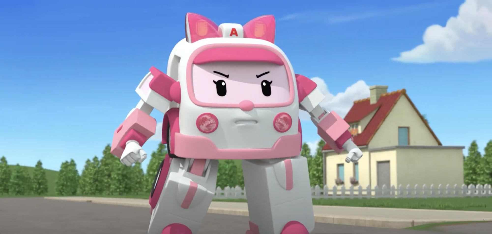

About Amber
Amber is an ambulance. She's part of the Broomstown rescue team.
Amber transforming into a robo-ambulance on a rescue mission
Amber's Characteristics
- Caring
- Friendly
- Helpful
- Intelligent
Amber's Friends
Amber has friends from all over Broomstown. She keeps the town safe with her friends from the Broomstown Rescue Team. Learn more about them below.